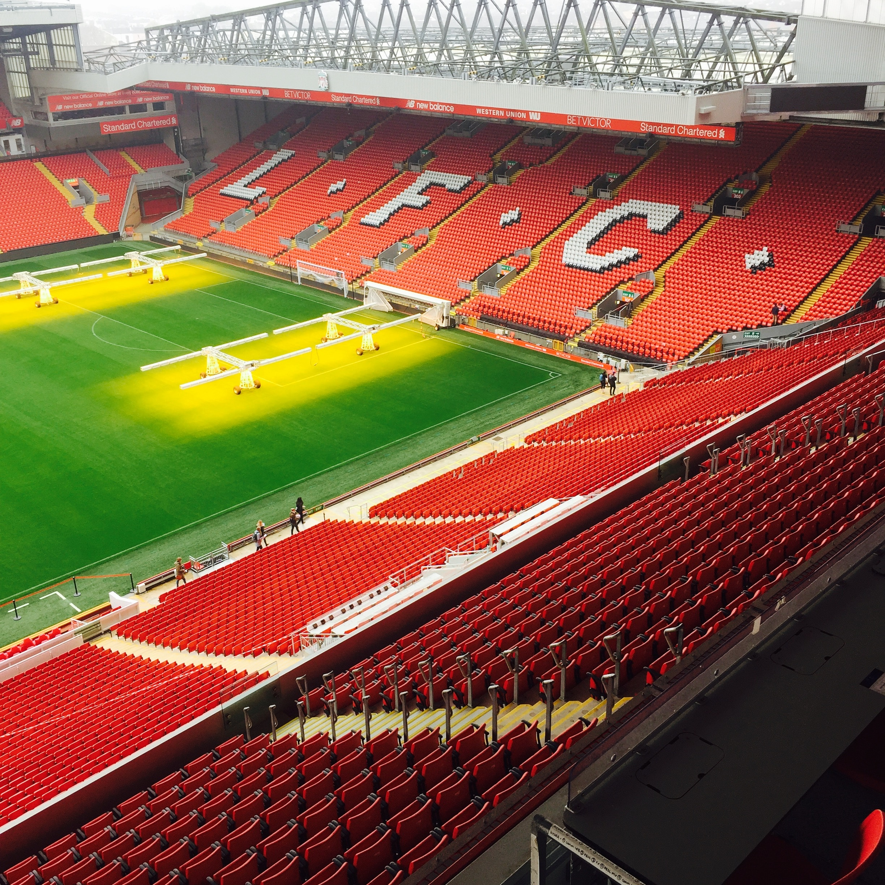

Liverpool Football Club is a professional football club based in Liverpool, England. The club competes in the Premier League, the top tier of English football. Founded in 1892, the club joined the Football League the following year and has played its home games at Anfield since its formation.
Domestically, the club has won 19 league titles, eight FA Cups, a record nine League Cups and 16 FA Community Shields. In international competitions, the club has won six European Cups, three UEFA Cups, four UEFA Super Cups—all English records—and one FIFA Club World Cup. The club established itself as a major force in domestic and European football in the 1970s and 1980s, when Bill Shankly, Bob Paisley, Joe Fagan and Kenny Dalglish, led the club to a combined 11 League titles and four European Cups. Liverpool won two further European Cups in 2005 and 2019 under the management of Rafael Benítez and Jürgen Klopp, respectively; the latter led Liverpool to a 19th league title in 2020, the club's first during the Premier League era.